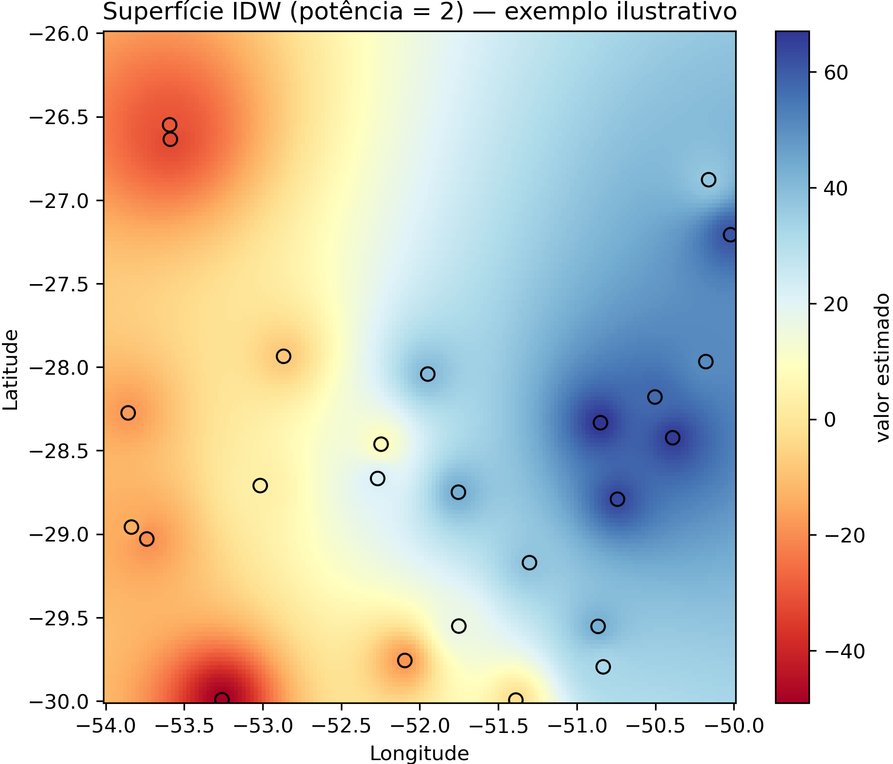

Interpolação espacial
As estações meteorológicas medem variáveis em pontos; a lavoura está em toda parte. A interpolação espacial preenche o vazio entre estações, estimando, por exemplo, a precipitação em uma gleba que não tem estação próxima. Esta página apresenta três métodos de complexidade crescente — IDW, Spline e Krigagem — e mostra por que a Krigagem se destaca ao entregar, junto com a estimativa, uma medida de incerteza.
Em todos os casos, parte-se dos valores observados nas estações (ex.: anomalia de precipitação de um dia) e estima-se uma superfície contínua sobre uma grade regular, que depois pode ser cruzada com a localização das COPs.
IDW — inverse distance weighting
O IDW estima o valor em um ponto como uma média ponderada dos valores das estações, dando mais peso às mais próximas — o peso cai com o inverso da distância elevada a uma potência [72]. É o método mais intuitivo e não exige ajuste de modelo:
import numpy as np
# Para cada ponto da grade, pondera as estações pelo inverso da distância^potência.
potencia = 2
distancias = np.sqrt((lon_estacoes - lon_ponto) ** 2 + (lat_estacoes - lat_ponto) ** 2)
pesos = 1.0 / (distancias ** potencia)
valor_estimado = np.sum(pesos * valor_estacoes) / np.sum(pesos)
A potência controla a suavidade: potências baixas geram superfícies suaves; potências altas concentram a influência nas estações vizinhas imediatas, gerando “bolhas” ao redor de cada uma. O IDW nunca extrapola além do intervalo observado e ignora a estrutura de correlação espacial do fenômeno — daí seus limites.
{kind=link}

Figura 32 - Superfície interpolada por IDW (potência = 2) — exemplo ilustrativo com dados sintéticos. Os círculos com borda preta são estações fictícias (cor = valor observado); a superfície contínua é a estimativa entre elas. Note as “bolhas” típicas do IDW ao redor de cada estação.
Spline (funções de base radial)
A interpolação por Spline ajusta uma superfície suave que passa pelos pontos observados, usando funções de base radial (RBF). Produz superfícies mais “naturais” que o IDW e pode extrapolar para fora do intervalo dos dados:
from scipy.interpolate import Rbf
rbf = Rbf(lon_estacoes, lat_estacoes, valor_estacoes, function='thin_plate')
superficie = rbf(grade_lon, grade_lat)
A escolha da função de base (thin_plate, multiquadric, gaussian…) afeta o
resultado. A Spline é boa para campos que variam suavemente, mas, como o IDW, não fornece
uma medida de incerteza da estimativa.
Krigagem
A Krigagem é o método geoestatístico de referência [73, 74]. Em vez de pesos fixos, ela aprende a estrutura de correlação espacial do próprio dado por meio do semivariograma — uma curva que descreve como a diferença entre pares de estações cresce com a distância — e usa essa estrutura para estimar valores de forma estatisticamente ótima.
🖼️ Imagem sugerida (IMG-TODO)
- Imagem ideal:
Esquema de um semivariograma teórico, com os eixos (distância × semivariância) e os componentes anotados: efeito pepita (nugget), patamar (sill) e alcance (range).
- Função:
dá forma visual ao semivariograma descrito no parágrafo, base do diferencial da Krigagem sobre IDW e Spline.
- Busca sugerida:
“semivariogram nugget sill range diagram”; “semivariograma alcance patamar efeito pepita esquema”
- Fonte provável:
documentação GIS (QGIS/SAGA/GRASS), Wikimedia Commons, artigos abertos
- Facilidade:
alta
from pykrige.ok import OrdinaryKriging
# O pykrige ajusta o modelo do semivariograma (aqui, esférico) aos dados.
kriging = OrdinaryKriging(lon_estacoes, lat_estacoes, valor_estacoes,
variogram_model='spherical')
# Retorna a estimativa E a variância da krigagem (a incerteza) em cada ponto.
estimativa, variancia = kriging.execute('grid', grade_lon_1d, grade_lat_1d)
O diferencial está no segundo retorno: a variância da krigagem é alta onde há poucas estações por perto e baixa onde a cobertura é densa. Isso é diretamente útil no contexto do Proagro — uma estimativa de chuva sobre uma gleba distante de qualquer estação vem acompanhada da informação de que é pouco confiável, o que deve pesar na priorização e na leitura pericial.
Qual método usar?
Não há vencedor universal. A forma honesta de comparar é a validação cruzada *leave-one-out*: remove-se uma estação por vez, estima-se seu valor com as demais e compara-se com o observado, acumulando o erro de cada método.
import numpy as np
# Para cada estação removida, estima-se com as restantes e guarda-se o erro.
erros_idw = []
for i in range(len(lon_estacoes)):
treino = np.arange(len(lon_estacoes)) != i
# ... estima o valor em (lon_estacoes[i], lat_estacoes[i]) usando 'treino' ...
erros_idw.append(valor_estimado - valor_estacoes[i])
rmse_idw = np.sqrt(np.mean(np.array(erros_idw) ** 2))
Comparando o RMSE (e o viés) dos três métodos para os dados em questão, escolhe-se o mais adequado àquele fenômeno e àquela densidade de estações. Como regra prática: o IDW serve para uma primeira leitura rápida; a Spline, para campos suaves; e a Krigagem, quando a incerteza da estimativa importa para a decisão — que é o caso típico da análise de sinistros.